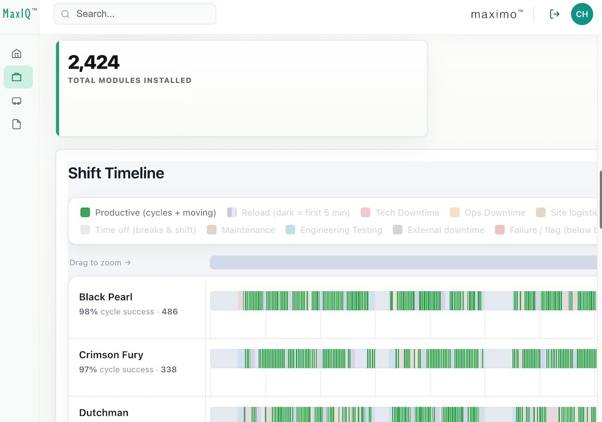

先把机器人负责的那一步说清楚
Maximo当前的核心任务是把沉重的光伏组件准确放到位置，而非独立完成整座电站。官网把组件摆放列为现阶段任务，把固定与现场物流列作可扩展合同内容。对施工负责人，这种拆分比笼统讨论自动化比例更有用：前一班组是否及时供料，后一班组能否接着固定，都会影响整条作业链。机器人移动与抓放即使顺畅，也不能据此推定接线、检验和所有辅助工作同时完成。试点应选择一段边界明确的工序，让接收组件的人确认交接状态，再计算节省了哪些重复搬运。
Maximo Max 4.0 · 施工机器人 · 厂商部署与产品公告

Maximo当前的核心任务是把沉重的光伏组件准确放到位置，而非独立完成整座电站。官网把组件摆放列为现阶段任务，把固定与现场物流列作可扩展合同内容。对施工负责人，这种拆分比笼统讨论自动化比例更有用：前一班组是否及时供料，后一班组能否接着固定，都会影响整条作业链。机器人移动与抓放即使顺畅，也不能据此推定接线、检验和所有辅助工作同时完成。试点应选择一段边界明确的工序，让接收组件的人确认交接状态，再计算节省了哪些重复搬运。
十月公告将Max 4.0分成三部分：Cortex负责视觉与规划，Form提供适合现场的机器人和工具，IQ把部署数据用于服务表现管理及模型训练反馈。官网展示MaxIQ界面，提示这套产品还需要观察多个机器与班次的工作状态。旧的Amazon资料说明Maximo以计算机视觉帮助组件定位；本次材料没有给出具体相机、雷达或力传感器配置，不能补写成某种传感方案。对使用者，值得追问的是一次定位失败怎样显现、谁能接管以及记录如何回到改进流程，而不是把“持续学习”理解成机器可自行改变所有现场规则。
客户按完成的任务支付费用，购买的是产出服务，而不只是机器在场的时间。这个模式把供应商收入同安装吞吐联系起来，但公开材料没有给出单价、最小合同量或停工责任。采购时应把组件已摆好、位置合格、可进入下一工序等状态写进同一验收规则，另列损伤与返工如何处理。若天气停工、供料中断或现场条件改变，谁承担等待成本也会影响实际价格。相较只询问机器人每分钟能搬几块，这些约定更接近班组真正付出的单位合格产出成本；本次未执行报价或商业询价。
厂商十月二十九日称已完成超过三十万项任务，并报告Max 4.0班组人均每班次工时安装率为人工的二点五倍。公开稿件没有提供同条件人工基线，不应改写为任何项目都能节省同样比例成本。三月公告谈的是Bellefield的四台Max 3.0与一百兆瓦，不能同新版本拼接出严格升级幅度。官网另外列三百万项后续任务管线，那是待推进工作，不是已经完成。判断下一步部署，应要求相同组件、场地、班组和班次条件下的验收记录，并把返工与停机纳入分母；这样才知道能力是否能从已做场地迁移。